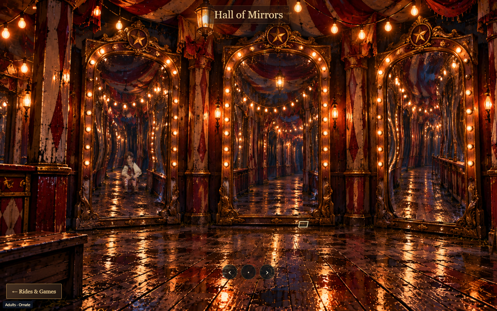
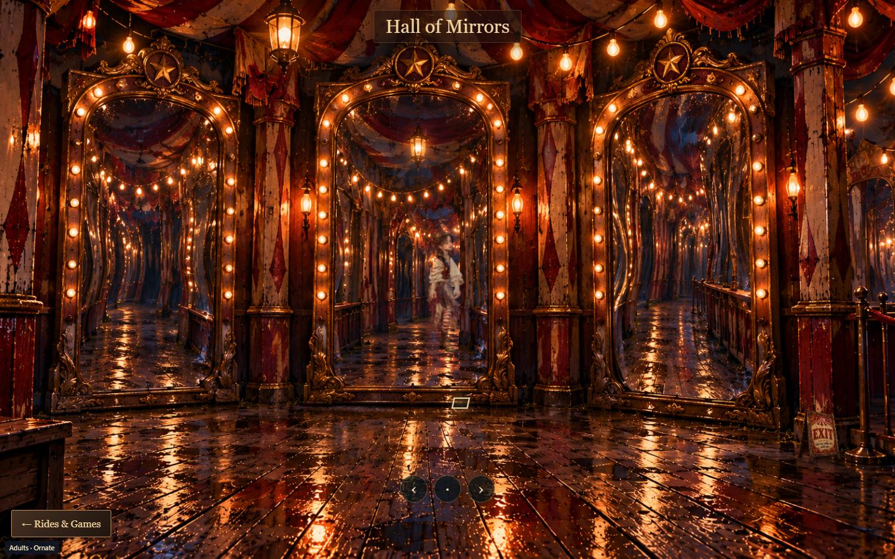
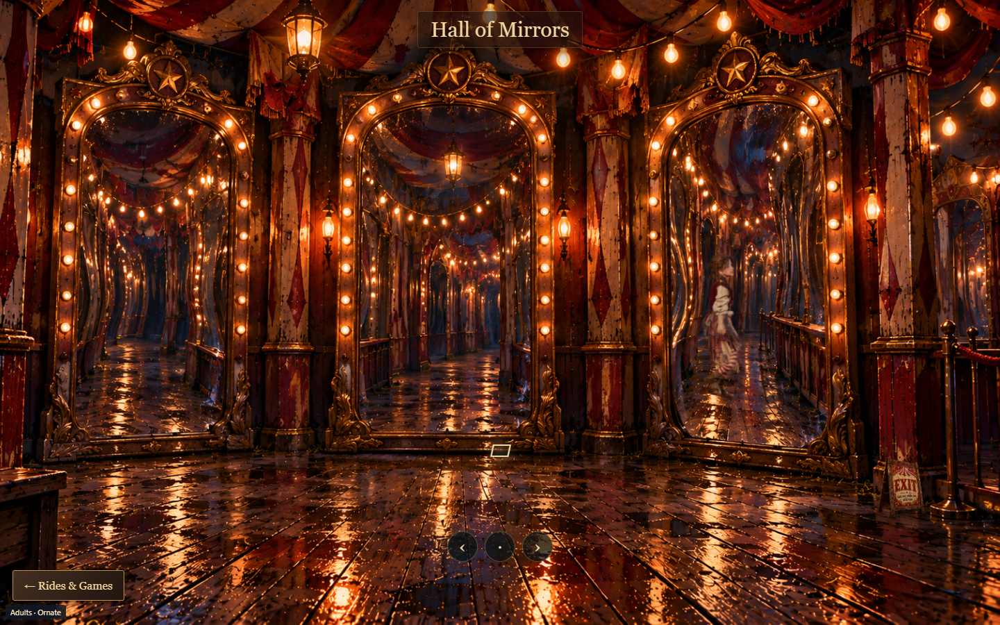
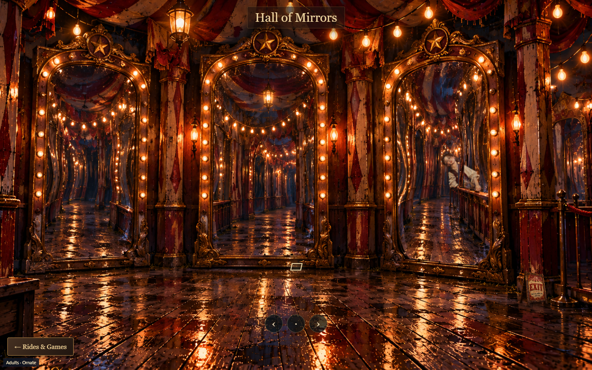
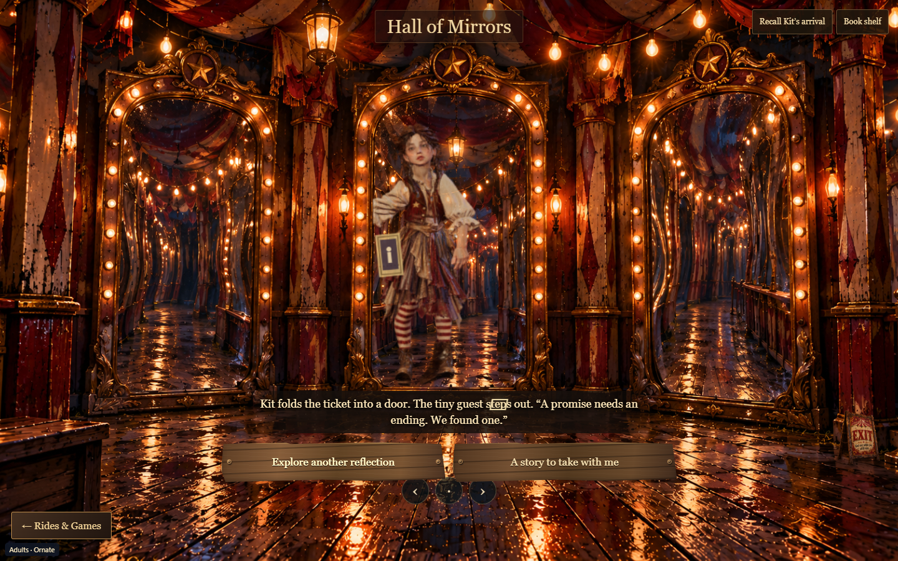
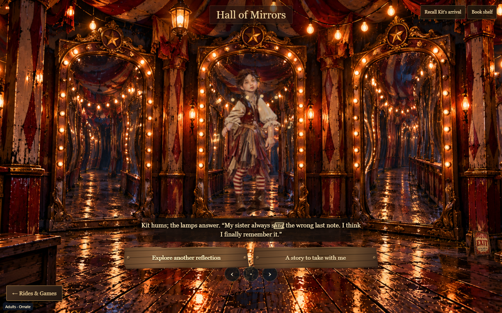
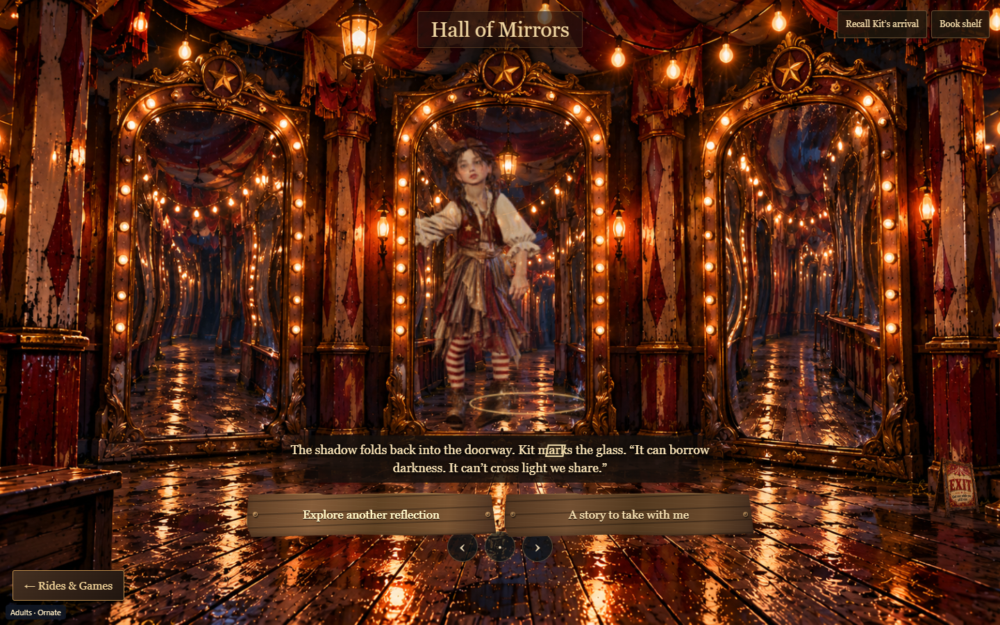

Kit's Arrival
Review capture from the development branch. Kit crosses the left, center, and right mirrors before returning to the glass. The 19.8-second recording includes the full introduction and first choices.
The recording has no audio because browser audio was not enabled during capture. Taps are visual; sound is available after user interaction when the browser permits it.
Three mirrors




Example paths



Each path has a second choice and two distinct resolutions. View the six-outcome evidence report.
Preference evidence
| Chosen experience | Recorded signals | Starter shelf |
|---|---|---|
| Follow clues | Mystery and investigation; then puzzle-solving or adventure and wonder | Mystery and wonder can match the age-filtered shelf. |
| Hear Kit | Character history and connection; then lighter emotion or a name mystery | Connection and mystery can match. |
| Face the shadow | Suspense and danger; then measured darker tension or brisk lighter reveal | These signals are stored; unsupported signals do not invent a book match. |
Evidence is tentative and comes only from options that explicitly name a story experience. Existing reading reactions, contradictions, age-band separation, reset, and local starter-shelf behavior remain intact. Live NovelIdeas recommendations are not connected.